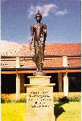

Home page | Viet page, Unicode
| Yo ca
vassasatam jive apassam dhammamuttamam Ekaham jivitam seyyo passato dhammamuttamam (Dhammapada, 115) |
 | Though
one should live a hundred years not seeing Dhamma supreme, yet better is life for a single day seeing Dhamma supreme. |
What is Buddhism? (Buddhist Society of Western Australia)
Buddhism in a Nutshell. Venerable Narada Mahathera
Basic Buddhism - A Modern Introduction to the Buddha's Teaching. V. A. GunasekaraWhat is Theravada Buddhism? John Bullitt
What is Theravada? Maung Kyauk Seinn
Theravada - Mahayana Buddhism. Venerable W. Rahula Mahathera
What is Theravada Buddhism? V. A. GunasekaraTheravada Buddhism in Vietnam. Binh Anson
1. Books:
(*) Chanting Book (with accompanied sound files). The Buddhist Society of Western Australia
(*) Buddhist Dictionary - Manual of Buddhist Terms and Doctrines. Venerable Nyanatiloka Mahathera
(*) Concise Pali-English Buddhist Dictionary. Venerable Buddhadatta Mahathera
(*) Concise Pali-Vietnamese Buddhist Dictionary. Venerable Buu-Chon Mahathera
(*) English-Pali Dictionary. Metta Net, Sri Lanka.
(*) Small Pali-English Glossary of Buddhist Terms. Bhikkhu Bodhi(*) Word of the Buddha. Venerable Nyanatiloka Mahathera
(*) What Buddhists Believe. Venerable K. Sri Dhammananda Mahathera
(*) Human Life and Problems. Venerable K. Sri Dhammananda Mahathera
(*) The Buddha and His Teachings. Venerable Narada Mahathera(*) The Noble Eightfold Path: The Way to the End of Suffering. Bhikkhu Bodhi
(*) Eightfold Path for the Housholder. Ten Talks by Jack Kornfield
(*) Eight Talks on Vipassana Meditation. Sayadaw U Janaka
(*) Mindfulness in Plain English. Venerable H. Gunaratana Mahathera
(*) Living Meditation, Living Insight. Dr. Thynn Thynn
(*) The Jhanas in Theravada Buddhist Meditation. Venerable H. Gunaratana Mahathera.
(*) A Swift Pair of Messengers. Bhikkhu Sujato.(*) Right View - The Sammaditthi Sutta and its Commentary. Translated by Bhikkhu Nanamoli, edited and revised by Bhikkhu Bodhi
(*) The Gentle Way of Buddhist Meditation - Dhamma Talks by Godwin Samararatne, Hongkong, 1997
(*) Beyond Belief. A. L. De Silva(*) Good Question, Good Answer. Bhikkhu S. Dhammika
(*) A Young People's Life of the Buddha. Bhikkhu Silacara
(*) The Life of the Buddha. Radhika Abeysekera
(*) Relatives and Disciples of the Buddha. Radhika Abeysekera(*) The Abhidharma. Peter Della Santina
(*) Abhidhamma in daily life. Nina Van Gorkom
(*) The Mind in Early Buddhism. Venerable Thich Minh-Thanh.(*) Here and Now - A Series of 10 Dhamma Talks. Ayya Khema.
(*) All of Us - Beset by Birth, Decay and Death - A Series of 12 Dhamma Talks. Ayya Khema.
(*) Beginnings: The Pali sutras. Samanera Bodhesako.
(*) Living Dhamma - A Collection of 7 Talks. Venerable Ajahn Chah.
(*) Key to Liberation and The Path to Peace - Talks on Dhamma Practice. Venerable Ajahn Chah.
(*) The Concept of Personality Revealed Through The Pancanikaya. Venerable Thich Chon-Thien.
(*) Starting Out Small - A Collection of Talks for Beginning Meditators. Ajahn Lee Dhammadharo.
(*) A Discourse on Paticcasamuppada (Dependent Origination). Venerable Mahasi Sayadaw.
(*) A Discourse on Malukyaputta Sutta. Venerable Mahasi Sayadaw.
(*) Handbook for Mankind. Bhikkhu Buddhadasa.
(*) The Coming Buddha, Ariya Metteyya. Sayagyi U Chit Tin.(*) Buddhism as the Foundation of Science. Bhikkhu Prayudh Payutto
(*) Buddhist Outlook on Daily Life. Nina van Gorkom
(*) Essential Themes of Buddhist Lectures. Venerable Sayadaw Ashin U Thittila
(*) Seeing the way. Various Western disciples of Venerable Ajahn Chah.
(*) A Technique of Living. Leonard A. Bullen.
(*) Milindapanha and Nagasenabhikshu Sutra - A Comparative Study. Bhikkhu Thich Minh Chau.
(*) Catupatisambhida in Theravada Buddhism (The Fourfold Analytical Knowledge In Pali Literature). Bhikkhu Kusalaguna.
2. Suttas (Discourses):
(*) Overview of the Pali Canon. Venerable Narada Mahathera
(*) Pali Text Society: Information on Pali Literature and Publications
(*) The Buddhist Scriptures. Sayadaw U Sobhana
(*) Guide to the Tipitaka. U Ko Lay
(*) List of Commentaries to the Tipitaka.
(*) Beyond the Tipitaka - A Field Guide to Post-canonical Pali Literature. John Bullitt
(*) Chronology of the Pali Canon. Bimala Churn Law.
(*) How old is the Suttapitaka? The relative value of textual and epigraphical sources for the study of early Indian Buddhism. Alexander Wynne.(*) Setting the Wheel of Dhamma in Motion
(*) The Four Noble Truths and the Noble Eightfold Path
(*) The Noble Eightfold Path
(*) The Abhidhamma Philosophy: Its Estimation in the Past and its value for the Present. Venerable Nyanaponika Mahathera(*) The Majjhima Nikaya (Collection of Middle Length Discourses): 152 suttas, translated by Sister Upalavanna.
(*) Dhammapada Stories, translated by Daw Mya Tin.
(*) The Mahavamsa - The Great Chronicle of Lanka from 6th Century BC to 4th Century AD. Translated by Wilhelm Geiger.(*) Greater Discourse on Foundations of Mindfulness
(*) Discourse on Mindfulness of Breathing (Ananda Sutta)
(*) Discourse on Mindfulness of Breathing (Anapanasati Sutta)
(*) Discourse on Mindfulness Immersed in the Body (Kayagata-sati Sutta)
(*) Factors of Concentration
(*) Four Grounds of Mindfulness (Nian Chu Jing, Chinese Madhyama-Agama)
(*) One Way in (Yi Ru Dao Jing, Chinese Ekottara-agama)
(*) The Path to Enlightenment - Extracts from the Suttas(*) The Eight-Precept Observance. Somdet Phra Buddhaghosacariya (Nanavara Thera)
(*) The 5 Precepts. BuddhaDharma web site
(*) Discipline and Conventions of Theravada Buddhist Renunciate Communities - A Guide for the Western Sangha
(*) The Bhikkhus' Rules: FAQs. Bhikkhu Ariyesako
(*) The ordination procedures and some Vinaya rules. Chanmyay Sayadaw Ashin Janakabhivamsa.
(*) Bhikkhuni Patimokkha - English translation.
(*) A Life Free from Money: Information about the Money Rules for Buddhist Monks and Nuns. Bhikkhu Dhamminda.(*) Understanding Vinaya. Ajahn Chah
(*) Vinaya: Ownership and Administration of Monasteries. Ajahn Brahmavamso
(*) Vinaya: Monks and Money. Ajahn Brahmavamso
(*) Vinaya: The Four Disrobing Offences. Ajahn Brahmavamso
(*) Vinaya: Wrong Livelihood. Ajahn Brahmavamso
(*) Vinaya: Ordination of Women. Ajahn Brahmavamso
(*) Vinaya: Monks and Women, Nuns and Men. Ajahn Brahmavamso
(*) Vinaya: May a monk act as a doctor? Ajahn Brahmavamso
(*) Vinaya: The Ordination Ceremony of a Monk. Ajahn Brahmavamso
(*) Vinaya: What the Buddha said about eating meat. Ajahn Brahmavamso
(*) Vinaya: The time and place for eating. Ajahn Brahmavamso.(*) Last days of the Buddha. Binh Anson
(*) Twenty Difficult Things
(*) Discourse on the Future Dangers
(*) Discourse on Dhamma Investigation: Kalama Sutta
(*) A look at the Kalama Sutta. Bhikkhu Bodhi
(*) The Shorter Discourse on Voidness (Culasunnata Sutta - Majjhima Nikaya 121) . Translated by Bhikkhu Nyanamoli and also by Bhikkhu Thanissaro
(*) Subha, The Enlightened Nun. Panadure Vajira Dasasilmatha
(*) Similes of the Raft and the Snake-catcher (Alagaddupama Sutta, Majjhima Nikaya). Venerable Henepola Gunaratana Mahathera
(*) Samadhi Sutta - Concentration (Tranquillity and Insight)
(*) Culavedalla Sutta - The Shorter Set of Questions-and-Answers.
(*) The Four Foundations of Mindfulness: A Summary. Venerable Sayadaw U Sīlānanda.(*) Aditta-pariyaya Sutta - The Fire Sermon
(*) Khuddakapatha - The Short Passages
(*) Metta Sutta (Discourse on Loving-kindness ). U Nandiya
(*) Selections from the Sutta Nipata. (Translated from the Pali by John D. Ireland)
(*) The Living Message of the Dhammapada. Bhikkhu Bodhi
(*) The Sutra on Knowing the Better Way to Live Alone. Venerable Thich Nhat Hanh
(*) The Buddha's Advice to Meghiya (Meghiya Sutta). Sister Ajahn Candasiri
(*) The Questions of King Milinda (Selected Passages)
(*) The Buddha's advice on the Path. Extracts from the Sutta Pitaka
(*) The Buddha's general advice to lay followers. Extracts from the Sutta Pitaka
(*) On the Ariyaavaasa Sutta (Discourse on the Abode of the Noble Ones). Venerable Mahasi Sayadaw.(*) How old is the Suttapitaka? The relative value of textual and epigraphical sources for the study of early Indian Buddhism. Alexander Wynne.
(*) The Home of Pali. U Razinda.
(*) The Advent of Pali Literature in Thailand. Ven. H. Saddhatissa.
3. Meditation:
(*) 8 Talks on Vipassana Meditation. Sayadaw U Janaka
(*) Introduction to Insight Meditation. Amaravati Buddhist Centre, U.K.
(*) Mindfulness with Breathing. Buddhadasa Bhikkhu
(*) Insight Meditation - Basic and progressive stages. Venerable Mahasi Sayadaw
(*) Practical Advice for Meditators. Bhikkhu Khantipalo.
(*) The Anapanasati Sutta -- A Practical Guide to Midfulness of Breathing and Tranquil Wisdom Meditation. Bhikkhu Vimalaramsi.
(*) The Bare-Bones Instructions to "Mindfulness of Breathing", taken from the Anapanasati Sutta, #118 in the Majjhima Nikaya. Bhikkhu Vimalaramsi.(*) The Basic Method of Meditation. Ajahn Brahmavamso
(*) Travelogue to the four jhanas. Ajahn Brahmavamso
(*) Satipatthana: The Fourfold Focus od Mindfulness. Ajahn Brahmavamso
(*) The Five Hindrances (Nivarana). Ajahn Brahmavamso
(*) Using non-self to let go. Ajahn Brahmavamso
(*) Deep insight. Ajahn Brahmavamso
(*) Meditation: The Heart of Buddhism. Ajahn Brahmavamso
(*) The quality of mindfulness. Ajahn Brahmavamso
(*) Using variety to "freshen up" our meditation. Ajahn Brahmavamso
(*) Joy at last to know there is no happiness in the world. Ajahn Brahmavamso
(*) The bliss of letting go. Ajahn Brahmavamso
(*) The ending of things - A discourse on "non-self". Ajahn Brahmavamso.
(*) Buddhism, The only real science. Ajahn Brahmavamso.
(*) Cultivate Tranquility, Harvest Insight. Ajahn Brahmavamso.
(*) Practising In The World. Ajahn Brahmavamso.
(*) Bāhiya's Teaching: In the Seen is just the Seen. Ajahn Brahmavamso.
(*) I know, but I don't know: The contemplation of death. Ajahn Brahmavamso.(*) The Path to Peace. Ajahn Chah.
(*) Buddho. Phra Ajahn Thate Desaransi
(*) A Gift of Dhamma. Ajahn Chah.
(*) Samma Samadhi -- Detachment Within Activity. Ajahn Chah.
(*) Eight Types of Knowledge. Ajahn Lee Dhammadharo.
(*) Tranquillity and Insight. Ajahn Maha Boowa Nanasampanno. Translated by Bhikkhu Thanissaro.
(*) The Wisdom of Samadhi. Ajahn Pannavaddho
(*) Timeless and True. Ajahn Fuang Jotiko
(*) Crossing the Ocean of Life. Ajahn Lee Dhammadharo
(*) The Fundamentals of Meditation. Ajahn Plien Panyapatipo
(*) Simply So. Dhamma Teachings of Luang Poo Sim Buddhacaro
(*) Ajahn's Sao Teaching(*) Jhanas, Concentration, and Wisdom. Bhikkhu Thanissaro
(*) The Path of Concentration and Mindfulness. Bhikkhu Thanissaro
(*) One Tool Among Many -- The Place of Vipassana in Buddhist Practice. Bhikkhu Thanissaro
(*) Using meditation to deal with Pain, Illness and Death. Bhikkhu Thanissaro
(*) A Guided Meditation. Bhikkhu Thanissaro
(*) Basic Breath Meditation Instructions. Bhikkhu Thanissaro.
(*) Jhana Not by the Numbers. Bhikkhu Thanissaro.(*) Noticing space. Ajahn Sumedho.
(*) Only one breath. Ajahn Sumedho.
(*) Samatha and Vipassana Meditation. Ajahn Jagaro.
(*) Right attitude of acceptance. Ajahn Jagaro.
(*) The Mystery of the Breath Nimitta, or The Case of the Missing Simile. Bhikkhu Sona
(*) Meditation of the Breath. Ajahn Pasanno
(*) A Fistful of Sand. Ajahn Suwat Suvaco
(*) Right Attitude. Ajahn Suwat Suvaco
(*) Disenchantment. Ajahn Suwat Suvaco
(*) Right Concentration. Ajahn Suwat Suvaco.
(*) Samadhi for Liberation. Ajahn Anan Akincano.(*) Upasika Kee Nanayon and the Social Dynamic of Theravadin Buddhist Practice. Bhikkhu Thanissaro
(*) Condensed Breath Meditation. Kor Khao Suan Luang (Kee Nanayon)
(*) Breath Meditation Condensed. Upasika Kee Nanayon
(*) Looking inward. Upasika Kee Nanayon
(*) Reading the Mind. Upasika Kee Nanayon(*) Contemplation of Feelings. Venerable Nyanaponika Mahathera
(*) Benefits of Long-term Meditation. Bhante H. Gunaratana
(*) Sati - Mindfulness. Bhante H. Gutanaratana
(*) Mindfulness of Feeling. Bhante H. Gunaratana
(*) Practical Vipassana. Bhante H. Gunaratana(*) Instructions to Insight meditation. Venerable Mahasi Sayadaw
(*) Satipatthana and Vipassana Meditation. Venerable Mahasi Sayadaw
(*) Venerable Mahasi Sayadaw - A Biographical Sketch
(*) The Benefits of Walking Meditation. Sayadaw U Silananda
(*) Introduction to Vipassana Meditation. Sayadaw U Silananda
(*) Meditation Instructions (For Loving-kindness Meditation and Vipassana Meditation). Sayadaw U Silananda
(*) The Four Foundations of Mindfulness (A Summary). Sayadaw U Silananda
(*) Access and Fixed Concentration. Bhikkhu Sujivo
(*) Conceit and Meditation. Bhikkhu Sujivo
(*) Meditating at Home. Bhikkhu Pannyavaro
(*) Anapana Sati: Meditation on Breathing. Mahathera Nauyane Ariyadhamma(*) Practical Guidelines for Vipassana. Ayya Kheminda
(*) The Meditative Mind. Ayya Khema.
(*) Meditating on No-Self. Ayya Khema.(*) Basic Insight Meditation. Compiled by Derek Leong
(*) The Benefits of Meditations and Sacrifice. Aung San Suu Kyi
(*) Working with Anger. Michelle McDonald
(*) Mindfulness and Compassion. Adrian Bint
(*) Introduction to Mental Culture. Buddhist Cultural Center, Sri Lanka
(*) Buddhist Meditation. Francis Story
(*) Children's Direct Seeing. Dr. Thynn Thynn
(*) Even the Best Meditators Have Old Wounds to Heal. Jack Kornfield
(*) Experiences in Meditation. Chris Kang
(*) Beginning Insight Meditation. Dorothy Figen(*) Control and freedom: The structure of Buddhist meditation in the Paali suttas. Donald K. Swearer
(*) The Universal Teaching of the Buddha. S.N. Goenka
(*) Don�t You Teach Buddhism? An Interview with S.N. Goenka.
(*) Why Meditation isn't Psychotherapy. Patrick Kearney
(*) A Buddhist Pilgrim's Progress. Daw Khin Myo Chit
(*) Formless Meditation. A roundtable discussion with Ajahn Sumedho, Patricia Dai-en Bennage, Tenzin Wangyal Rinpoche and Gaylon Ferguson.
(*) The Bearable Irritation of Being. Ajahn Sumedho.
(*) Jhāna and Lokuttarajjhāna. Brahmāli Bhikkhu.
(*) Satipatthāna & Samādhi. Bhikkhu Bramāli.
(*) Sammasati: An Exposition of Right Mindfulness. Ven. P. A. Payutto.(*) Toward a theory of the relation between Tranquility and Insight. Ethan Mills.
4. Other Dhamma Essays:
(*) What is Buddhism? (Buddhist Society of W.A.)
(*) Questions and Answers on Buddhism. Yew Han Hee (1995)
(*) Introduction to Buddhism. Mike Butler
(*) What is Buddhism? U Thittila
(*) Basic Buddhism - A Modern Introduction to the Buddha's Teaching. V. A. Gunasekara
(*) Buddhism in a Nutshell. Venerable Narada Mahathera
(*) The Dhamma Tree. R.P. Hayes
(*) The Way of The Buddha. The Buddhist Society, U.K.
(*) Buddhism 101 - Be a lamp upon yourself. Phor Kark See Temple, Singapore
(*) Buddhism - An Introduction. Graeme Lyall
(*) What Buddhism is. U Ba Khin
(*) What is Theravada Buddhism? V. A. Gunasekara(*) FAQs on Buddhist culture. BuddhaNet
(*) FAQs - Talk.Religion.Buddhism newsgroup. John Kahila (1996)(*) Sectarianism Disclaimer. S. Dharmamita
(*) Theravada and Mahayana. Venerable W. Rahula Mahathera
(*) Mahayana, Hinayana, Theravada
(*) The myth of Hinayana. K�re A. Lie
(*) Mahayana and Hinayana. Venerable Abhinyana(*) Two Main Schools of Buddhism. Venerable K. Sri Dhammananda Mahathera
(*) The Bodhisattva Ideal in Theravada. Jeffrey Samuels
(*) Theravada - Mahayana Buddhism. Venerable W. Rahula Mahathera
(*) Bodhisattva Ideal in Buddhism. Venerable W. Rahula Mahathera
(*) What is Theravada? Maung Kyauk Seinn
(*) Brief History of the Great Councils. Ministry of Religious Affairs, Myanmar
(*) Buddhist Councils. Venerable Rewata Dhamma(*) The Meaning of Puja (Offerings). Buddhist Society of Western Australia
(*) Puja. Ajahn Sucitto
(*) On Vesak Day 2541 (1997). Venerable Thich Bao Lac
(*) The Significance of Vesak. Bhikkhu Mahinda
(*) Vesakha Puja. Ajahn Lee Dhammadharo
(*) Vassa (Rains Retreat) and Kathina (Robe Offering) Ceremony(*) Environmental Protection. Venerable Thich Tri Quang (1996)
(*) Non-grasping and Deliverance from Suffering. Lieu Phap
(*) Our Modern World's Problems. Venerable Thich Bao Lac (1996)
(*) Thao-Duong Zen School: The Zen-Pure Land Union and Modern Vietnamese Buddhism. Venerable Thich Thien An
(*) Five principles for a new global moral order. Venerable Thich Minh Chau(*) On Vegetarianism. Compiled by Binh Anson
(*) What the Buddha said about eating meat. Ajahn Brahmavamso
(*) Buddhism and Vegetarianism. Ajahn Jagaro
(*) Buddhism and Vegetarianism: The Rationale for the Buddha's Views on the Consumption of Meat. V. A. Gunasekara
(*) Are you "Herbivore" or "Carnivore"? Jan Sanjivaputta
(*) Vegetarianism. Venerable K. S. Dhammananda Mahathera(*) Ajahn Chah's Wisdom
(*) Right Practice -- Steady Practice. Ajahn Chah
(*) Our real home - A talk to an aging lay disciple approaching death. Ajahn Chah
(*) Ajahn Chah Subhatto: An Appreciation & Personal Recollection. Ajahn Khemadhammo
(*) Understanding Dukkha. Ajahn Chah.(*) Being nobody. Ajahn Sumedho
(*) Listening to Thought. Ajahn Sumedho
(*) Beyond the Self Position. Ajahn Sumedho
(*) The Human Family. Ajahn Sumedho
(*) Is Buddhism A Religion? Ajahn Sumedho
(*) Ajahn Sumedho Interviewed. Interview by Roger Wheeler(*) Going for Refuge. Bhikkhu Thanissaro
(*) The Healing Power of the Precepts. Bhikkhu Thanissaro
(*) Emptiness. Bhikkhu Thanissaro
(*) Affirming the Truths of the Heart - The Buddhist Teachings on Samvega and Pasada. Bhikkhu Thanissaro
(*) The road to Nirvana is paved with skillful intentions. Bhikkhu Thanissaro
(*) Right speech. Bhikkhu Thanissaro
(*) The Customs of the Noble Ones. Bhikkhu Thanissaro
(*) A Question of Skill: An Interview with Thanissaro Bhikkhu.
(*) Listen well. Ajahn Fuang Jotiko (translated by Bhikkhu Thanissaro)
(*) It's not about fatalism. Bhikkhu Thanissaro
(*) Putting the self aside. Bhikkhu Thanissaro.
(*) Generosity First. Bhikkhu Thanissaro.
(*) Admirable Friendship. Bhikkhu Thanissaro.(*) Message for a Globalized World. Bhikkhu Bodhi
(*) The Living Message of the Dhammapada. Bhikkhu Bodhi
(*) Questions on Kamma. Bhikkhu Bodhi
(*) Questions on Rebirth. Bhikkhu Bodhi
(*) Tolerance and Diversity. Bhikkhu Bodhi
(*) Two Faces of the Dhamma. Bhikkhu Bodhi
(*) The Buddha & His Message - Past, Present, and Future. Bhikkhu Bodhi
(*) Promoting Buddhism in Europe. Bhikkhu Bodhi
(*) The Case for Study. Bhikkhu Bodhi
(*) An Interview with Bhikkhu Bodhi. Bhikkhu Kantasilo
(*) Climbing to the Top of the Mountain. An interview with Bhikkhu Bodhi.
(*) The Jhānas and the Lay Disciple According to the Pāli Suttas. Bhikkhu Bodhi.
(*) Translator for the Buddha: An Interview with Bhikkhu Bodhi.(*) Emptiness and Pure Awareness. Ajahn Amaro
(*) Beyond Being and Non-Being. Ajahn Amaro
(*) In the Refuge of Sangha. Ajahn Amaro
(*) Spiritual Friendship. Ajahn Amaro
(*) The Lesser, The Greater, The Diamond and The Way. Ajahn Amaro
(*) The Happy Monk: Ajahn Amaro on Living Buddhism in the West
(*) Rugged Interdependency: Generosity in the Land of the Individualist. Ajahn Amaro
(*) Gathering Together the Three Levels of Truth. Ajahn Amaro.
(*) Escaping from Mara. Ajahn Amaro.
(*) A day in the life: A monk on Fearless Mountain (Ajahn Amaro). Tony Anthony.(*) The Four Parameters of Clinging. Ajahn Pasanno.
(*) An Extraordinary Yet Ordinary Human Being. Ajahn Pasanno.(*) Growth and development of Buddhist Organizations. Bhante H. Gunaratana
(*) Going upstream. Bhante H. Gunaratana
(*) Sex, Celebacy and the Spiritual life. Bhante H. Gunaratana
(*) The Buddhist view of death - An interview with Bhante Gunaratana. Samaneri Sudhamma and Margot Born.
(*) Do it yourself. Bhante H. Gunaratana.(*) The God-Idea. Venerable K. Sri Dhammananda Mahathera
(*) Leading a Buddhist Life. Venerable K. Sri Dhammananda Mahathera
(*) Buddhism in the eyes of intellectuals. Venerable K. Sri Dhammananda Mahathera
(*) A happy married life. Venerable K. Sri Dhammananda Mahathera
(*) Is death really frightening? Venerable K. Sri Dhammananda Mahathera
(*) Problems and Responsibilities. Venerable K. Sri Dhammananda Mahathera
(*) Buddhism for the future. Venerable K. Sri Dhammananda Mahathera(*) Observing the problems in our lives. Ajahn Jagaro
(*) Skillful means to reduce the power of ill-will. Ajahn Jagaro
(*) Getting to know the mind. Ajahn Jagaro
(*) Nibbana and the Paradox of Happiness. Ajahn Jagaro
(*) A Conversation with John Cianciosi (formerly, Ajahn Jagaro).
(*) Death and Dying. Ajahn Jagaro.
(*) Compassion - The Natural Expression of Awakening. Ajahn Jagaro.
(*) Beyond Boredom and Depression. Ajahn Jagaro.
(*) Anatta (Non-self) and Kamma (Karma): The Best Kept Secret in the Universe. Ajahn Jagaro.
(*) Buddhism and God. Ajahn Jagaro.
(*) True Freedom. Ajahn Jagaro.(*) Following the true Buddhist path
(*) The Prison of Life. Bhikkhu Buddhadasa
(*) Nibbana for Everyone. Bhikkhu Buddhadasa
(*) Forest Wat, Wild Monks. Bhikkhu Buddhadasa
(*) Essential Points of Buddhist Teaching. Bhikkhu Buddhadasa
(*) Emptiness. Bhikkhu Buddhadasa
(*) The Undying. Ajahn Maha Boowa(*) On Making a Mistake. Ajahn Brahmavamso
(*) Attachment. Ajahn Brahmavamvo
(*) The Meaning of Sangha. Ajahn Brahmavamso
(*) In the Presence of Nibbana - Developing Faith in the Buddhist Path to Enlightenment. Ajahn Brahmavamso.
(*) Growth of Buddhism in the West. Ajahn Brahmavamso
(*) Living Meaningfully, Dying Joyfully. Ajahn Brahmavamso.
(*) Paticca-samuppada - Dependent Origination. Ajahn Brahamvamso.
(*) A Forest Monk and a Zen Roshi. Ajahn Brahmavamso & Gil Alon, interviewed by Rachael Kohn.
(*) There are gods, miracles do happen. Ajahn Brahmavamso.
(*) The Buddhist perspective. Ajahn Brahmavamso.(*) Practical Buddhism: Taking responsibility for our lives. Ajahn Jayasaro
(*) Laying the Foundation for Social Action. Ajahn Pasanno
(*) Going Forth. Ajahn Viradhammo
(*) Regret and Well Being. Bhikkhu Munindo
(*) An Iridescence on the Water. Bhikkhu Dhammavitakkho
(*) Practical Buddhism: Taking responsibility for our lives. Ajahn Jayasaro(*) Fulfillment and Liberation. Ajahn Viradhammo
(*) Bringing the Teachings Alive. Ajahn Viradhammo
(*) A Ripple in a Pond - An interview with Ajahn Sucitto
(*) Origins and Decline: An Essay in Buddhist Cosmology. Bhikkhu Punnadhammo
(*) The Spiritual Faculties. Ajahn Nyanadhammo
(*) Making the Dhamma Your Own. Ajahn Khamdee Pabhaso
(*) Who is the Buddha? Narada Mahathera
(*) Right Speech. Piyadassi Mahathera
(*) Practicing the Dhamma in Ordinary Life: Generosity. Bhikkhu Yogavacara Rahula
(*) Is Theravada Buddhism for Arahatship Only? Sayadaw U Silananda
(*) No inner core - Anatta. Sayadaw U Silananda
(*) A talk of Kamma, Rebirth and Suffering. Sayadaw U Silananda.
(*) How to live a proper life. Takkasila Ashin Sumangala(*) Buddhist Theory of Kamma. Venerable Narada Mahathera
(*) Alayavijnana - Store Consciousness. Venerable Dr. Walpola Rahula
(*) Buddhism in the Western World. Venerable Dr. Walpola Rahula
(*) One Vehicle for Peace. Ven. Dr. Walpola Rahula.
(*) Kathina Robe-Offering Ceremony: Historical and Spiritual Significance. Bhikkhu Dhammasami
(*) The Practice of Chanting in Buddhism. Bhikkhu Dhammasami
(*) Liberation - Relevance of Sutta-Vinaya. Bhikkhu Dhammavuddho
(*) Only we can help ourselves. Bhikkhu Dhammavuddho
(*) Living in the present. Venerable Visuddhaacaara
(*) Sunyata, Emptiness and Self-emptying, Kenosis. Venerable Rewata Dhamma
(*) Buddhism and Economic Justice. Venerable Rewata Dhamma.
(*) The Contribution of Buddhism to the World of Art and Architecture. Venerable Rewata Dhamma.
(*) The Garden of Liberation. Bhikkhu Santikaro
(*) Parents and Children - Transmitting the Buddhist Heritage Across Generations. Venerable Medagama. Vajiraganana Nayake Thera(*) Sangha: The Ideal World Community. Bhikkhu Prayudh Payutto
(*) From Ceylonese to Sri Lankan Buddhism. Bhikkhu Prayudh Payutto
(*) Where women stand. Bhikkhu Prayudh Payutto (Phra Dhammapitaka)
(*) Aging and Dying. Bhikkhu Prayudh Payutto(*) E-learning Buddhism on the Internet. Bhikkhu Pannyavaro
(*) Lumbini in the New Millennium: Youth in Buddhism. Bhikkhu Sugandha
(*) Eight excellent and wonderful things in the great ocean and the Sasana. Bhikkhu Seelananda
(*) How the Buddha died. Bhikkhu Mettanando
(*) The God idea. Bhikkhu Dhammapiyo
(*) The First Discourse of the Buddha. Sayadaw Adipati
(*) Theory of Karma. Venerable Sayadaw U Sobhana
(*) Samma Ditthi: Right View. Bhikkhu Seelawimala
(*) Footprints in the dust: Buddha�s travels in India. Bhikkhu S. Dhammika
(*) The Tsunami - A Buddhist View. Bhikkhu S. Dhammika.(*) How the Buddha's Enlightenment changed the world's thinking. Ven. Medagama Vajiragnana
(*) Practicing Dhamma In Ordinary Life: Generosity. Bhikkhu Yogavacara Rahula
(*) The Theravada Attitude to Discipline. Bhikkhu Nyanarama
(*) No Escape for the Ego. An interview with Venerable Master Sheng-yen by Carter Phipps
(*) The Ascetic Sumedhā' s Life, and the Ten Perfections. Bhikkhu Giac-Hanh Dhammadhara.
(*) Buddhism for the Next Century: Toward Renewing a Moral Thai Society. Phra Phaisan Visalo.(*) Protection Through Satipatthana. Venerable Nyanaponika Mahahera.
(*) Buddhism and the God-Idea. Venerable Nyanaponika Mahahera.
(*) Why End Suffering?. Venerable Nyanaponika Mahahera.
(*) Seeing Things As They Are. Venerable Nyanaponika Mahahera.
(*) Kamma and Its Fruit. Venerable Nyanaponika Mahahera.
(*) Ven. Nyanaponika Maha Thera: A Bhikkhu with intellectually convinced vision of Dhamma. Rohan L. Jayetilleke.(*) Dhamma Without Rebirth? Bhikkhu Bodhi
(*) Buddhism Without Beliefs: Review. Bhikkhu Bodhi
(*) Buddhism Without Beliefs critiqued. Bhikkhu Punnadhammo.(*) Harmonious Living. Ayya Khema
(*) Liberation Here and Now. Ayya Khema
(*) Why come to a monastery? Sister Candasiri
(*) Love Unbounded. Sister Candasiri
(*) Renunciation: The Highest Happiness. Sister Siripanna
(*) It can be very simple. An interview with Ajahn Sundara.
(*) Simplicity. Sister Ajahn Sundara.
(*) Taking Refuge. Sister Ajahn Sundara.
(*) Freedom in Restraint. Sister Ajahn Sundara.
(*) Relinquishing 'Me' and 'Mine'. Sister Ajahn Jitindriya.
(*) The Process Of Mental Suffering. Bhikkhuni Lieu-Phap.
(*) The Approach Of Ancient Healing: Psychotherapy In Buddhism. Bhikkhuni Khemanandi Huyen-Chau.
(*) Buddhist Attitude to Education. Bhikkhuni Dhammananda Nguyen-Huong.(*) On growing a Theravadan Nuns' Sangha in Britain
(*) The First Buddhist Nun. Rev. Sarika Dharma
(*) Restoring the Order of Nuns to the Theravaadin Tradition. Senarat Wijayasundara
(*) On the restoration of Bhikkhuni Order - Selected articles
(*) Interview with the Venerable Bhikkhuni Kusuma. Pennie White
(*) Buddhist women. Bimala Churn Law(*) Prosperity and Happiness: The Buddhist View. Suvimalee Karunaratna
(*) The Talk Nobody Wants to Hear. Charlotte Joko Beck
(*) Buddhist Nuns in Burma. Dr. Friedgard Lottermoser
(*) Is Buddhism a Religion? Dorothy Figen
(*) Why Is There Suffering in the World? Dorothy Figen
(*) Facets of Metta. Sharon Salzberg
(*) Mudita. Eileen Siriwardhana
(*) Pride And Conceit. Dr. Elizabeth Ashby and Brian Fawcett
(*) Paramis: The Heart of Buddha's Teaching and Our Own Practice. Sylvia Boorstein
(*) Sylvia Boorstein: Meditation and Spirituality. Catharine Reeve(*) The Greatest Blessings. Nina van Gorkom
(*) Understanding Reality. Nina van Gorkom
(*) Morality with and without a creator God. Radhika Abeysekera
(*) The Appeal of Buddhism in the West. Radhika Abeysekera.
(*) Women's Liberation. Sharon Salzberg, Barbara Rhodes, Judith Simmer-Brown & Pat O'Hara
(*) Woman to Woman. Sandy Boucher
(*) One Foot in the World - Buddhist Approaches to Present-day Problems. Lily De Silva
(*) Sanghamitta Theri - a liberated woman. Dr. Lorna Dewaraja(*) When should we hold our tongue? Rasika Quek
(*) Living Buddhism. Venerable Chin Kung
(*) The Slightly Demented Vision of Robert Thurman. Prof. Robert Thurman
(*) Passing the Light. Tang Chade Meng
(*) The Perception of "Karma-Free" CyberZones. Richard P. Hayes
(*) Five Steps to Skillful Means in Buddhist Forums. Dominick Spirelli
(*) Ethnic Buddhists in Australia. Graeme Lyall
(*) The Purpose of Life. Graeme Lyall
(*) Radical Buddhism. Leonard Price
(*) Buddhism: A Method of Mind Training. Leonard A. Bullen
(*) Vedana (Sensation) in Paticcasamuppada (Dependent Origination). Vipassana Research Institute.(*) Seeking the Buddha's Footprints. Shantum Seth
(*) Buddhism and Thai Society. Sunthorn Plamintr
(*) The Buddhist Attitude to God. V. A. Gunasekara.
(*) Hinduism in Buddhist Perspective. V. A. Gunasekara
(*) Buddhist reflections on death. V.F. Gunaratna
(*) Homosexuality and Theravada Buddhism. A. L. De Silva
(*) Facing Death Without Fear. Lily De Silva.(*) Vietnamese mode of self-reference: A model of Buddhist egology. Steven W. Laycock
(*) Born Again. Sanitsude Ekachai
(*) A Simple Forest Monk. Binh Anson
(*) How I became a practicing Buddhist. Binh Anson
(*) Why I Am a Buddhist. Anthony Billings
(*) Buddhism in the Kingdom of Thailand. Sathien Bodhinantha(*) Leading Virtuous Lives As Laymen. U Chit Tin
(*) Global problem-solving: A Buddhist perspective. Sulak Sivaraksa
(*) Buddhism and Tolerance for diversity of religion and belief. Sulak Sivaraksa
(*) A Thai perspective on socially engaged Buddhism: A conversation with Sulak Sivaraksa. Donald Rothberg
(*) American Buddhists: who are they? Jan Nattier
(*) The worldliness of Buddhism. Donald K. Swearer
(*) What appeals to me most in Buddhism. Francis Story
(*) Interpretation of Buddhist terminology at the background of Chinese traditional thoughts. Latika Lahiri
(*) The significance of 'Tathagatagarbha' -- A positive expression of 'Sunyata'. Heng-Ching Shih
(*) Cosmology and meditation: from the Agganna Sutta to the Mahayana Buddhism. Rupert Gethin(*) The mind-body relationship in Pali Buddhism: A philosophical investigation. Peter Harvey
(*) The Buddhist path and social responsibility. Jack Kornfield
(*) To the forest for refuge. An interview with Joseph Goldstein
(*) Why is Buddhism the fastest growing religion in Australia? Darren Nelson
(*) The Dhamma Theory - Philosophical Cornerstone of the Abhidhamma. Y. Karunadasa
(*) How Free is Freedom of Thought. Sanath Nanayakkara
(*) Buddhist Ethics, Moral Perfection and Modern Society. Prof. P.D. Premasiri
(*) Freedom of faith and worship in Myanmar. Hla Myo Nwe
(*) The Bodhisattva concept. A. G. S. Kariyawasam
(*) The Road to Liberation - Paticcasamuppada (Dependent Origination). Ron Wijewantha(*) The six Buddhist universities of ancient India. D. Amarasiri Weeraratne
(*) Thailand's gift to Sri Lanka: the establishment of the Siam Nikaya. Dr. Lorna Dewaraja
(*) Buddhist missionary in the West after WW II. Nemsiri Mutukumara
(*) The Prospects for the Growth of Buddhism in Germany and other Western Countries. Agganyani (Christa Bentenrieder).
(*) The legend of Bundala: Venerable Nanavira Thera (1920-1965). Kingsley Heendeniya.
(*) On Understanding Nama-Rupa. Kingsley Heendeniya.
(*) The Buddhist Critique of Sassatavada and Ucchedavada: The Key to a proper Understanding of the Origin and the Doctrines of early Buddhism. Y. Karunadasa.
(*) Establishing Pali Text Society for Buddhist literature. Nemsiri Mutukumara.
(*) The Great Sariputta, the foremost disciple of Gautama Samma-Sambuddha. W. D. Wickramasinghe.(*) The Importance of Study. A Panel Discussion with Bhante Henepola Gunaratana, John Daido Loori, Christina Feldman and Georges Dreyfus.
(*) Venerable Narada Maha Thera: A Buddhist Missionary Par Excellence. O. Gunasekera.
(*) The Indispensability of Peace in the Present World Context. Bhikkhu Sugandha.
(*) The Life and Teachings of Ajahn Chah: Remembrances of His Western Students.
(*) Chanting the "Mirror of the Dhamma". Ajahn Punnadhammo.
(*) In the footsteps of the 'Slave Of Buddha' (Bhikkhu Buddhadasa). Karnjariya Sukrung.
(*) The food of kindness. Ayya Medhanandi.
(*) The way of the mystic. Ayya Medhanandi.
(*) The joy hidden in sorrow. Ayya Medhanandi.
(*) Generosity and goodness at every step. Ayya Medhanandi.
(*) Come from the shadows. Ayya Medhanandi.(*) Sri Lanka's Contribution to the Development of the Pali Canon. Prof. Oliver Abeynayake.
(*) Buddhism in Sri Lanka. G. P. Malalasekera.
(*) Soulful wit - Towards a more joyous New Year. Nissara Horayangura.
(*) Ideal Solitude: An Exposition on the Bhaddekaratta Sutta. Bhikkhu �anananda.
(*) The great virtue: Sugato. Chandani Abeynayake.
(*) Note on the probable age of the Dialogues (Digha and Majjhima Nik�yas). T. W. Rhys Davids.
(*) Crossing the wilderness: how the Buddha narrates his own travels. Sarah Shaw.
(*) Buddhism and Sex. M. O'C. Walshe.
(*) Recollections of an Anagarika. Adrian Cambden.
(*) Buddhism and the Brahma concept. Bellanwila Wimalaratana Thera.(*) Conceit and Pride. Elizabeth Ashby and Brian Fawcett.
5. Other Information:
(*) The Buddhist Society of Western Australia, Bodhinyana Monastery and Dhammasara Nuns's Monastery
(*) Sasanarakkha Buddhist Sanctuary . A Buddhist sanctuary located in Malaysia for the training of Theravada Buddhist monks in theory and practice of the Dhammavinaya. Dedicated to evolving a modern Theravada Buddhist identity guided by the scriptural tradition.
For comments, questions and other requests, please send email to Binh Anson, Ph.D.:
budsas@gmail.com
Top
| Home page | Viet page,
Unicode
last updated:
14-08-2006